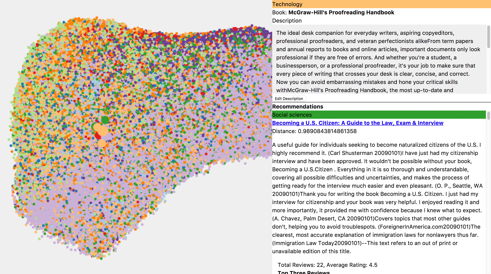
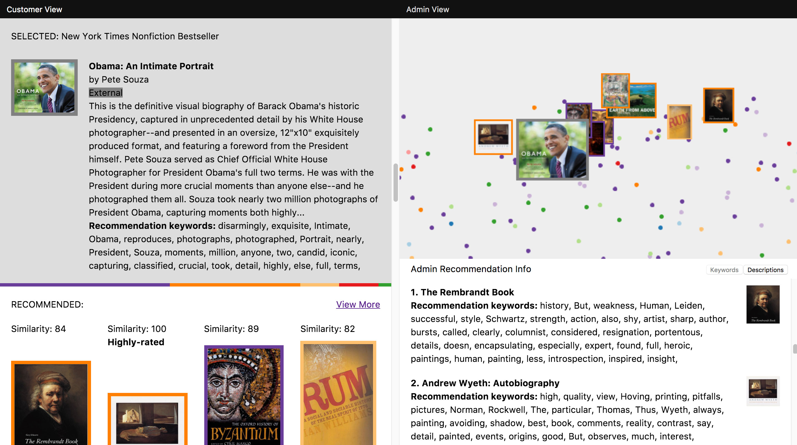

Semantic Recommendations
FF07 · 2017

This is an applied research report by Cloudera Fast Forward Labs. We write reports about emerging technologies, and conduct experiments to explore what’s possible. Read our full report about Semantic Recommendations below, or download the PDF.
1. Introduction
The internet has given us an avalanche of options for what to read, watch and buy. Because of this, recommendation algorithms, which find items that will interest a particular person, are more important than ever.
But until recently, recommendation algorithms suffered from a critical shortcoming: they didn’t understand the content of the items they are recommending or the underlying preferences of their users. Using them was like getting a book recommendation from someone who hadn’t read the book and didn’t know you well. This limitation was down to naive algorithms that made unsubstantiated assumptions with insufficient datasets, and a general lack of tools and hardware to unlock meaning within raw content. However, thanks to recent algorithmic advances in the field of embeddings, namely multi-modal models, we have begun to uncover how the semantic content of items relates to a user’s preference.

This new capability will allow us to do several things. First, it will improve current recommendation systems by solving the cold start problem — where existing algorithms simply cannot create recommendations for items or users they haven’t seen before. It will also improve recommendations by allowing the algorithms to use the most important information about each item: the item itself. Algorithms that understand content — and the preferences of a user in relation to that content — can make better recommendations. Using these recommendation algorithms is like getting a book recommendation from friend who knows you well and has actually read the book!
Another exciting aspect of these new algorithms is the ability to apply recommendation algorithms in contexts other than e-commerce. Better recommendations predict the outcome of an interaction, so why restrict their use to e-commerce? Multi-modal models could become important in many situations: pairing users to customer service representatives, recommending which emails you should respond to first (and why), or even recommending travel routes that are not simply the most efficient, but rather the route you would most prefer.
In this report we discuss this new field, from the history of how it has evolved to where it currently is and what work is being done to make the algorithms more widely applicable. While these methods are still in their infancy, they show incredible promise.
2. What Are Recommendations?
Recommendation algorithms may seem to inhabit only content platforms and e-commerce websites, but their application is actually quite broad. Whenever we have two types of things that need to be paired together — moviegoers and movies, customers and customer support representatives — we have a recommendation problem. The task is, given historical information about how these pairings have gone in the past, to predict new pairings for the future.
 Figure 2.1 Recommendation systems have many uses beyond recommending products.
Figure 2.1 Recommendation systems have many uses beyond recommending products.
For example, we can easily imagine a system that predicts the best customer sales representative to help a person based on the current question as well as past interactions. Or we could choose to make a system that predicts the outcome of the interaction between X and Y. Because of the symmetry of the system, it could also be used to recommend X given Y or Y given X.
The massive scope of applicability is why recommendation problems constantly show up in different fields, and also why they are so hard to solve (as we’ll discuss in Complexity of the Problem). It is because of their complexity that in most places where recommendation algorithms would make sense, heuristics are used instead. For example, an online video game will usually group users together based on experience. What if instead the grouping also took into consideration play style and social dynamics? Both systems would be recommending users to users for matching in a game; however, the former ignores all but the simplest information. On the other hand, extracting the relevant information to make the more informed decision is incredibly difficult; we don’t have information regarding most of the possible pairings, and we can’t know while building the system whether user A and B will actually play well together.
 Figure 2.2 Collaborative filtering and matrix factorization make use of past interactions (shown in orange) to make recommendations.
Figure 2.2 Collaborative filtering and matrix factorization make use of past interactions (shown in orange) to make recommendations.
There have been many attempts to try to uncover some of this underlying information in the data. Collaborative filtering and matrix factorization are two methods that have generally been the frontrunners for solving these problems by using previous interactions to try and understand how objects interact.
Deep learning has also recently come into the recommendations game and shifted things quite a lot. The main benefit from deep learning (as we’ll see in Neural Network Approaches) is that we can use more than just interaction data, and start learning from the actual raw data describing the objects we are recommending. Because of this, the models can more easily uncover the semantic information that contributes to why the interactions go well or poorly. This is done using a new and promising method called multimodal embedding (MME).
We discussed embeddings in our report on “Summarization”, where we examined using models such as word2vec[1] and skip-thoughts as a way to turn language into a numerical representation that a computer can understand. Unlike classic representations (for example, bag of words), this representation distills an understanding of the text that can be used to do complex and insightful calculations — these models are powerful enough to solve analogies and summarize documents!
 Figure 2.3 Embeddings can use text or image data from an item to group them for recommendations.
Figure 2.3 Embeddings can use text or image data from an item to group them for recommendations.
More importantly, multi-modal systems learn fundamental characteristics about the items or users and create a model that understands how these characteristics (which can come from intrinsic data, such as an image or description of an item) relate to each other. By having our recommendation system extract semantic meaning from that raw data we can form recommendations for items and users we’ve never seen before, avoiding the so-called “cold start problem” that plagues other methods.
While this extension to the field is still in its infancy, more work is being done constantly to expand the utility of deep learning in recommendations. We’ll explore some of the shortcomings of the current approaches in Failures, but this field is ramping up and soon will open up the possibility to solve most of the problems that are recommendation problems as recommendation problems.
The Role of Representation
The term “representation” will come up a lot in this report, and it is important enough that we should spend some time discussing what it means. All algorithms operating on real-world objects need to come up with some way of representing those objects in a quantitative way. One way of representing categorical data, or data that can be divided into groups, is with a one-hot vector. That is to say, you have a long list of all the possible values a sample can be represented by, and for each individual sample, you put a 1 for each value that’s present and a 0 for all the others. For example, a bookseller who wanted to encode the topics of the books in their inventory could use a one-hot vector for the topics in Harry Potter and the Sorcerer’s Stone that looked like the figure below.
 Figure 2.4 An example 1hot vector for Harry Potter and the Sorcerer’s Stone.
Figure 2.4 An example 1hot vector for Harry Potter and the Sorcerer’s Stone.
This can be done for all sorts of fields that may be present. So, we could encode a book title by having a list of all the possible words that could be in the title, and putting a 1 next to the words that exist in the title of the book we’re encoding (this is the aforementioned “bag of words” approach). Similarly, for interactions, we could have a list of all our users, and for a given book we could put a 1 next to the users who have interacted with that book and a 0 next to the users who have not.[2]
The major problem with these methods, however, is that they don’t represent any meaningful semantic information about the content that we can use for comparison. For example, consider the bag of words representations for The Buffalo Book: The Full Saga of the American Animal and High Hopes: The Rise and Decline of Buffalo, New York. Ignoring stopwords like “of” and “the,” they are linked by the word “Buffalo.” On the other hand, those titles share no words in common with that of a third book, Of Bison and Man. As humans, we can see the relationships between the books and understand that The Buffalo Book and Of Bison and Man are related, while High Hopes is about a completely different topic — but using this representation, a computer cannot.
 Figure 2.5 Simply checking for the presence of common words ignores the context those words are used in.
Figure 2.5 Simply checking for the presence of common words ignores the context those words are used in.
Throughout this report, we’ll talk about three main ways of picking representations for recommendations that address this issue: collaborative filtering, matrix factorization, and multimodal embeddings. We will dive into the full technical details in History of Recommendation Systems, but thinking about the various types of representations used in the algorithms is a good way to distinguish and understand them.
In collaborative filtering (see Figure 2.6), we ignore all the problems with having rich representations of objects in our recommendation system and simply focus on the user-item interactions, hoping that the interactions themselves contain meaningful information. That is to say, some people are just very into buffalo, and thus their interactions will mainly be with books on that topic… a feature that will propagate into our recommendation system (even if we don’t know what a buffalo is!).
 Figure 2.6 Collaborative filtering finds recommendations using common likes between users.
Figure 2.6 Collaborative filtering finds recommendations using common likes between users.
In matrix factorization, described in Matrix Factorization, we take the interaction data or the metadata and try to distill it into a smaller, more compact form (see Figure 2.7). So, the bag-of-words representation for a book title, which could consider tens of thousands of words, would be distilled down to 10 or so values (called factors), which would encode higher-level features. This can be thought of as a type of topic extraction, in the sense that sets of features (like the presence of the word “buffalo” or “bison”) contribute to one factor, while the presence of other sets of features (like the words “New York”) will contribute to another factor. However, matrix factorization still starts with one-hot representations before creating a new one, and thus carries with it many of the associated problems.
 Figure 2.7 Matrix factorization abstracts factors out of the items and uses those factors to make recommendations.
Figure 2.7 Matrix factorization abstracts factors out of the items and uses those factors to make recommendations.
Embeddings, on the other hand, never attempt to look at the bag-of-words
representation and instead look at the raw text (Figure 2.8). In doing so, they are able to
learn from word order and from word context. In the end, this gives us a
representation where titles about buffalo, regardless of the exact
terminology being used, will be deemed similar to each other. Moreover,
the structure that the embedding learns contains within it a general
understanding of how all the words relate to each other. For example,
with word2vec it is possible to add and subtract words such that, for
example, vec("USA") - vec("Washington DC") + vec("France") is close to vec("Paris"). This
sort of deep understanding about the content of the data being fed into
the system is unparalleled, and lets us use information that is hidden
in text — such as topic, tone, style, and content — in our algorithms.
 Figure 2.8 Embeddings use raw text to place items and users in an embedding space.
Figure 2.8 Embeddings use raw text to place items and users in an embedding space.
For more information about the importance of representation and how they are created in the context of language models, please read section 4.2, “Language Models with RNNs” from FF04: Summarization.
Why Recommendations Are Hard
Complexity of the Problem
Like A/B testing and reinforcement learning, recommendations are part of a class of problems called Markov decision processes (MDPs). MDPs are problems where there is a finite state describing the world and a finite number of actions that can be taken, and each action has an unknown reward associated with it. Returning to the initial e-commerce example, the state would be a user’s history on the site and the interaction history for all the items in the online catalogue. The action would be a choice of which item to show to the user, and the reward would be whether the user purchases the item. Importantly, the effects of the action and the final user interaction go on to affect the state of the system and change future actions. This way of thinking about recommendations is a useful way to account for both the generality of these systems (beyond just e-commerce) and complications in building a robust system.
 Figure 2.9 A recommendation system modeled as a Markov decision process.
Figure 2.9 A recommendation system modeled as a Markov decision process.
As a point of comparison, let’s look at a solution to an MDP that has gained popularity — playing Atari with reinforcement learning[3]. A good way to do this is by looking at the number of parameters involved in defining the problem; it can serve as a proxy for how complex our solution must be. An Atari screen has a resolution of 160x192 pixels and a maximum of 128 colors. This corresponds to a state that can be represented by 3,932,160 numbers. The action state can be encoded by three numbers, two for the left/right and up/down position of the joystick and one for the button. Finally, the reward is simply how much a user’s score has gone up.
In contrast, the Netflix recommendations dataset[4] contains 17,770 movies, rated from 1 to 5 by 480,189 users. This creates a state representable by 42,664,792,650 numbers (and this is if we ignore the order in which a user watches movies!). The number of actions we can take is equal to the number of items we have multiplied by the number of recommendations we want to show the user. Even if we only recommend one movie, that’s an action state representable by 17,770 numbers! Furthermore, the reward can become quite tricky to calculate. We can look at whether a user watches the movie, but we might also consider what rating that user gives it, whether they watch the whole thing, or whether that movie recommendation influences their decision to watch another movie (for example, if we recommended 2 Fast 2 Furious but the user decides to watch the original Fast and Furious first).
In order to deal with this complexity, various algorithms have been created that take advantage of some structure we can find in the data. This structure can be used to reduce the number of parameters needed to model the problem and make a model tractable. As an example, classical collaborative filtering algorithms (described in detail in Collaborative Filtering) rely on the assumption that people can be considered similar if they interact with similar items, and that people want to see items that similar people like. What this does is reduce the number of possible recommended items to those our friends have interacted with, or those that people who’ve bought similar things to items we’ve purchased have interacted with. This may seem like a fairly benign assumption to make, but what happens, for example, with the news media if most people see the same 90% of articles from the major headlines, and a user’s personal taste is only evident from the last 10% of articles they look at? We discuss some of the possible social effects of this in Filter Bubbles and Echo Chambers.
Multimodal embeddings try to approach this problem by avoiding it entirely. Instead of operating on every item and every user separately, we only consider the properties that make up the objects. With books, for example, this means that we only need to consider the words that make up a book’s summary. This may seem like making the problem much harder, but it’s a method that also comes with a lot more data, since each item has a wealth of data associated with it. Furthermore, since we are training our system simply to find good representations of the books, as opposed to directly creating recommendations, we simplify the action phase of the algorithm as well. We now only have to put books in the neighborhood of books other people have liked, and far away from books other people haven’t liked.
New Data
Another difficulty is how to deal with new items. For example, if we have a new article that no one has interacted with, how do we know what types of users might enjoy it if we are relying on the interactions of “similar users” for our recommendations? Recommendation systems such as these on the internet generally also come with explanations in the form of: “You read article A, and so did Alice. Alice also read article B, so you should read it, too.” In the absence of a user interacting with the article, however, we don’t know how it fits in with user preferences. This is the cold start problem mentioned earlier.
 Figure 2.10 Collaborative filtering is unable to make recommendations for a new item because it does not have interaction data for that item.
Figure 2.10 Collaborative filtering is unable to make recommendations for a new item because it does not have interaction data for that item.
Many methods attempt to solve it by using metadata about the objects. So, if you generally read political articles, we will recommend to you our new political article, regardless of who has interacted with it. This, however, can lead to very bad recommendations, because we have to make strong assumptions about what properties to extract out of an article so that our system will have a general understanding of it. What if you don’t actually care about politics in general, and just want to read about a certain event or figure? In that case, our system would have to have a special tag that takes that into account. Alternatively, you may simply like long-form political editorials and nothing else; how can a metadata algorithm know this, unless we have already introduced “long-form politics” as a tag in our system?
Multimodal embeddings are able to deal with this by looking directly at the content that is being recommended and learning their own way of understanding the relevant features. This stems from the trend in machine learning of using deep learning to automatically find what aspects of the data are interesting.[5] The thought is: why should I tell the system that I think “long-form politics” will be important, when it can learn that by itself? In fact, this is a much more robust way of doing things, since the machine is able to find a much wider variety of ways of representing the items than a human could.
MMEs rely only on the content of the items being recommended and the items that users have interacted with in the past. This helps us completely avoid the cold start problem, because we don’t need to know who is interacting with a new piece of media or what tags are associated with it; we simply need to know its content. The algorithm is able to use that information to infer how the content aligns with a person’s interests. We can recommend a new article to you because the topic/tone/style aligns with your preferences, not because of other users’ interactions.
Missing Data and Evaluation
Finally, we come to the biggest difficulty with recommendations: evaluation. When first creating a recommendation system, you have to decide what you are actually trying to do. Are you trying to predict whether a user will interact with a new item, or predict the user’s preference order for various items? How do you know when you’ve failed? How do you know when you’ve succeeded? How do you deal with the fact that your model is fundamentally altering the state of the world it is trying to model?
Generally, when a recommendation system is being created, data is truncated in time, and we try to predict the newest data using the oldest data. This is to simulate the fact that when training a model, we cannot ask the user whether they would like a recommendation or not. This changes the problem into one of predicting whether a user did, in the newest data, interact with a recommended item (essentially removing any notion of feedback). It is important to realize, though, that this is fundamentally a different problem, and comes with its own additional problems.
For example, if I predicted that you would like Introduction to Algorithms but you didn’t interact with it in the latest data, then was I wrong? Should I penalize my algorithm in favor of it predicting that you wouldn’t like the book? If you as a user have only given me a very small sample of data regarding your preferences, it is impossible to tell. This is why current recommendation methods are very quick to put users into very small groups of recommendations; they assume that anything you haven’t interacted with is something you don’t like, instead of simply being something you haven’t had the chance to interact with yet. This is particularly problematic because most users only interact with a small percentage of a vast number of possible items. (How many movies from the Netflix catalogue have you looked at? How many items from Amazon’s full listing have you bought?)
As a result, the only motivated way to train a recommendation system is online, using A/B testing, multi-armed bandits,[6] or similar algorithms from the reinforcement learning community. These algorithms explore how you may react to different items, and they operate on user feedback, as opposed to historical data. This removes the assumption that not interacting is the same as not liking, as well as intrinsically incorporating that feedback.
However, doing this is hard — and it is hard for reasons that no algorithm can fix. We must show results to users and get their feedback. This requires having a large enough and active enough user base to be able to test and refine the system. Furthermore, it requires a good enough data pipeline to take this interaction data in and refine the model on the fly, as more interactions occur. Consequently, it generally takes much longer to train a model that has satisfactory results.
What Are the Solutions?
We can see that recommendations is a very complex problem. There are many decisions to be made about algorithm, representation, and data quality. In addition, it may not always be obvious what is being optimized for or how to best capture this as a machine learning task. Because of these subtleties, it is important to have a good understanding of the variety of algorithms that support these recommendation systems. By understanding the algorithms, choices can be made to mitigate many of the complications introduced here.
3. How Do Recommendations Work?
In order to fully understand the current landscape of recommendation systems, it’s important to go through the history of the algorithmic advancements. No method created yet is a one-size-fits-all solution, so it’s essential to understand the benefits of all possible methods in order to create the best system for your problem.
Furthermore, this is an active field of research, and new algorithms and methods are constantly being published. One result of this volatility in the field is that an understanding of the nuances of your data is necessary in making proper algorithmic choices; no current algorithm is robust enough to take in arbitrary data and output high-quality results. Even the multimodal approaches we present in this report are still fragile and require care when being used (as we discuss in Failures). As a result, knowing the variety of recommendation algorithms that are available and iterating in complexity is crucial for building a high-quality recommendation system.
History of Recommendation Systems
Collaborative Filtering
The term collaborative filtering first appeared in a 1992 paper describing Tapestry,[7] an experimental mail system developed to help users filter for interesting emails. Collaborative filtering was novel because it introduced a new dimension to the recommendation problem: user feedback. In addition to filtering documents by content keywords, this made it possible to narrow down the results to documents that others have found interesting. User feedback data can be explicit or implicit. When a user provides explicit preference information (such as liking or disliking an email), the data is considered explicit. Implicit data, on the other hand, is generated by user actions from which email preferences are inferred. One example of implicit data is the number of times a user forwards an email.
Recommendation systems today continue to use collaborative filtering, but the collaborative data used is more extensive, the filtering methods more sophisticated. Given a set of rich historical interaction data, a recommendation system attempts to tease out some information that allows it to predict user preferences. One approach is to identify a group of similar users from the data and assume they share the same preferences. If Alice liked two out of the three books that Bob liked, perhaps Alice is similar to Bob and the system can recommend the third book Bob liked to Alice? This neighborhood strategy disregards the underlying content — it does not need to know that the books Bob and Alice both liked were from the Harry Potter series. On the other hand, the lack of domain knowledge means that neighborhood methods can only predict preferences for items they have seen before (the cold start problem). In the example of Alice and Bob, if there is a new Harry Potter book and no one has read it before, the system will not know what to do with it.
What sort of representation for users should we use such that recommendation systems can digest it? Users and their interactions with various items can first be visualized using a graph. In Figure 3.1, we see that there are three users (Alice, Bob, Charlie) and four items (Sorcerer’s Stone, Chamber of Secrets, Python 101, JavaScript 101). A line between a user and an item means that an interaction occurred. This interaction can be an explicit “like” or an implicit “read.” If we have more information about the interaction, that can be added as a weighting factor to the line. For example, if a user rated an interaction on a scale of 1 to 5, the line can be weighted accordingly.
 Figure 3.1 Graph of user and item interactions.
Figure 3.1 Graph of user and item interactions.
In Figure 3.1 we see, for example, that Alice likes Chamber of Secrets, Javascript 101, and Python 101 while Charlie likes Chamber of Secrets and Python 101. This graphical representation needs to be transformed into a matrix before recommendation algorithms can process it (a matrix formed like this to show interactions is called an adjacency matrix). By convention, each row of the matrix represents a user and each column of the matrix represents an item. Figure 3.2 shows the matrix derived from our corresponding graph. Each value of a line in the graph is entered into the corresponding (User, Item) cell in the matrix. In our example, the line between Alice and Chamber of Secrets is entered as a 1 in cell (2,1) of the matrix, since we assign Alice to row one and Chamber of Secrets to column two. Our example with three users and four items translates into a matrix of size 3x4.
 Figure 3.2 User and item interactions in matrix representation.
Figure 3.2 User and item interactions in matrix representation.
In real-life applications, these interaction matrices are large and sparse. The MovieLens 100K dataset, often used for benchmarking purposes, has 100,000 ratings from 943 users on 1,682 movies. The corresponding matrix has a dimension of 943x1682 and is sparse; only 6.3% of the matrix has data. This sparsity makes it incredibly hard to extract any meaningful information from the graph structure, since we simply have no clue whether the other 93.7% of interactions would go well or poorly.
Furthermore, these matrices usually contain weak preference signals. Imagine a user who rates many movies highly and indiscriminately. This user would be connected to almost every movie in the catalogue and would have a disproportionate effect on the evaluation of recommendations. In general, it is said that collaborative filtering is not very “spam-resistant” for this reason; popular items or users will unduly influence any future recommendations. At the other extreme, a user who rates very sparingly does not give our system very much information about their preferences. As a result, their recommendations will be more susceptible to the spammy data.
k-Nearest Neighbor (k-NN)
Now suppose we would like to make a recommendation for Bob. We could start by determining who is similar to Bob. One reasonable metric to use is “the number of items that both users interacted with.” Would this work? Imagine two cases: in the first case, Frank and Grace rated a total of 100 items, and 2 of the items are the same; in the second case, Frank and Dan rated a total of 5 items and 2 of the items are the same. Our original metric would suggest that Frank is equally similar to Grace and Dan. Clearly this is not true. For our original metric to be useful, it needs to be normalized. We divide by the total number of items interacted with by both users to obtain a new metric.
 Figure 3.3 Which similarity score is chosen for collaborative filtering can substantially change the outcomes.
Figure 3.3 Which similarity score is chosen for collaborative filtering can substantially change the outcomes.
Using this new metric to measure similarity (or distance), we compute the distance between (Alice, Charlie) to be 2/3 and between (Bob, Charlie) to be 1/3. Since Charlie is more similar to Alice, we assume that Charlie will also be interested in what Alice has liked. Looking back to the matrix representation, we recommend JavaScript 101 to Charlie.
 Figure 3.4 Dividing by nearest neighbors helps us understand which other user is most similar to Charlie.
Figure 3.4 Dividing by nearest neighbors helps us understand which other user is most similar to Charlie.
The k-NN algorithm is based on this idea. Instead of finding the most similar user (or “neighbor”), it looks for k of them. In addition, the algorithm uses various distance measures.[8] In the context of recommenders, one can think of k as a trade-off between precision and generality. A large k implies that the recommendation result is obtained by aggregating preference information for many similar users.[9] As a result, it is less targeted and more general. In the extreme case where k=1, the system relies on the preference of a single user.
The algorithm, while simple to implement, is computationally expensive because it calculates a distance measure for all users in the training set.[10] For large datasets, it is often intractable. On the other hand, if the dataset is very small, simple methods like k-dimensional (k-d) trees would suffice. Here, as the name implies, data is split (approximately) in half along each dimension. To find the nearest neighbor of a data point, one just needs to walk down the tree. Unfortunately, like k-NN, the k-d tree algorithm suffers from the curse of dimensionality; the large number of subbranches in the tree makes finding the nearest neighbor prohibitive.
Locality-Sensitive Hashing (LSH) Forest
Instead of finding the nearest neighbor, getting an approximate nearest neighbor often suffices in real-life applications. Approximate algorithms are stochastic. Even though the solutions are not exact and are correct only to a certain probability, these algorithms allow us to trade off accuracy with speed. LSH Forest is an example of such an algorithm.[11]
 Figure 3.5 LSH groups datapoints into buckets.
Figure 3.5 LSH groups datapoints into buckets.
Given a set of data points, LSH attempts to group (through a hash function) points that are close together into one bucket, as illustrated in Figure 3.5. Points that end up in the same bucket as the target point are considered similar; their actual distance measures to the target are computed. The top k (as in k-NN) points are returned. The probabilistic nature of LSH implies that each run of the algorithm can produce different outcomes — that is, each time the algorithm is run, it can find different sets of points that belong in the same bucket as the target. To increase the chances of finding more similar points, the algorithm is run multiple times, with each run yielding a set of points that are close to the target (hence the name “Forest”). The top k points are selected from the union of these sets.
Matrix Factorization
Up until now we have been discussing recommendation methods based on user similarities. These neighborhood approaches do not scale well to larger datasets and lack understanding of the underlying data. Given a user-book interaction matrix, neighborhood approaches can tell you that Bob and Alice have similar interests, but are unable to explain that Bob and Alice are similar because they both like young adult fantasy books.
This lack of understanding about the underlying reasons for an interaction contributes to collaborative filtering’s inability to deal with spammy data. It also ruins any potential to deal with the cold start problem, since without interactions with an item or user, we have no information about it. On the other hand, matrix factorization, which belongs to a class of latent factor models, is a different approach that tries to make sense of the interaction matrix. It does so by finding factors that explain most or all of the information in the matrix. These factors are extracted from the data mathematically and do not easily map to humanly noticeable ones.[12]
 Figure 3.6 Matrix factorization uses two matrices. The first showing user preference for factors, and the second showing item associations with those factors.
Figure 3.6 Matrix factorization uses two matrices. The first showing user preference for factors, and the second showing item associations with those factors.
Recall that in collaborative filtering, the representation is the interaction matrix where each row represents a user and each column represents an item. In matrix factorization we instead use two smaller matrices to represent this data. The first matrix contains user preferences for factors (rather than items), and the second matrix associates items with their factor representations. As a hypothetical example, instead of liking all 14 Harry Potter and Twilight books, a user now likes the “Fantasy” and “Young Adult” factors. Chamber of Secrets is now represented by the factors “Fantasy” and “Young Adult.” The hope is that this new representation can model underlying features in the data and start approaching the question of why a user liked a particular item. If our representation can somehow encode this, then our recommendation algorithm can use this information in its predictions.
Once a factorized version of the interaction matrix is created, there are two ways to use it for recommendations. In the first approach, we multiply these two matrices to give us an approximation of the original; issuing a recommendation for a particular user-item pair just means reading off the corresponding row and column from the new matrix[13] In the second (more common) approach, the problem reverts back to a k-nearest neighbors problem of finding items with similar representations (or in this case, factor values) to users. However, the output of the recommendation system is now a set of factors relating to preference, which needs to be mapped to items. Just like in collaborative filtering, where we need a method to map similar users to ranked items, we now need a way to map user preferences to items.
 Figure 3.8 We can recommend books to Bob based on his factor preferences. Note that he has already read Sorcerer’s Stone and Chamber of Secrets so we filter those from the final recommendation.
Figure 3.8 We can recommend books to Bob based on his factor preferences. Note that he has already read Sorcerer’s Stone and Chamber of Secrets so we filter those from the final recommendation.
To use matrix factorization, the number of factors needs to be specified. A smaller number is preferred because the resulting user-factor and item-factor matrices will be small. This leads to a considerable speedup for both training the model and offering recommendations. Because matrix factorization enables one to model the interaction matrix, it is sometimes referred to as model-based collaborative filtering.
Nonnegative Matrix Factorization (NMF)
NMF[14] is a special kind of matrix factorization used when the original interaction matrix does not have negative elements and both smaller decomposed matrices are required to be nonnegative. In certain applications, the nonnegativity constraint is preferred because it provides physically meaningful features. An example is an interaction matrix that captures the number of times a user clicked on an item. The original matrix has physical meaning associated with it, and NMF preserves the nonnegativity of the resulting factor matrices.
In NMF, the decomposition of the original matrix into two smaller ones is obtained by first defining a cost function[15] and subsequently minimizing it, often using stochastic gradient descent (SGD). This algorithm is an example of why understanding the data we are basing our algorithms on is so important. Matrix factorization algorithms, like many algorithms based solely on interaction data, can have trouble converging. Giving our algorithm additional information about the form and constraints of our data, like the fact that no entries will ever be negative, helps it converge and come to a sensible result.
Singular Value Decomposition (SVD)
Another algorithm often discussed along with matrix factorization is SVD. Conventional SVD of a matrix factorizes it into a product of three matrices. In the context of an interaction matrix, one can interpret the first matrix as describing the interaction between users and features, the second as describing the interaction between items and features, and the third as a weighting matrix. In contrast to NMF, conventional SVD is a theoretical solution that gives an exact decomposition and is only defined for a fully specified matrix. Given that most historical rating matrices were sparse, early recommendation systems had to replace missing data with substitute data in order to use SVD. This distorted the data and increased computational complexity. As a result, conventional SVD is not commonly used in recommendation systems today.
Simon Funk’s version of SVD (of Netflix Prize fame) is a spin on the traditional, where only observed historical data is fitted.[16] By fixing the number of features used to estimate the original interaction matrix, the algorithm works to decompose it into two smaller matrices. Today when SVD is mentioned in the literature, it generally refers to this modified version. When a nonnegativity constraint is not important, SVD is a popular algorithm because of its accuracy and scalability.
Principal Component Analysis (PCA)
 Figure 3.7 PCA analysis extracts the directions with the most variability in the data.
Figure 3.7 PCA analysis extracts the directions with the most variability in the data.
Another algorithm that can be used to extract features to represent the interaction matrix is PCA. To understand PCA, take a look at Figure 3.7, which shows some data points plotted in a two-dimensional space. The direction (or vector) that explains the most variability in the data is denoted by the longer orange line. The remaining variability is explained by the shorter orange line. PCA works by finding and ranking these vectors; they are called “principal components” and can be used to recover the original data. PCA is useful when one is trying to identify important components and ignore noise in the data. This can be achieved by using the top principal components (instead of all) to build an estimator for the original dataset.
Using PCA in a recommendation system is straightforward — it is applied to the interaction matrix and the top k principal components are used to construct an approximation of the historical matrix. Similar to the number of factors in NMF and the number of features in SVD, the number of components in PCA is a knob that can be adjusted to trade off the amount of information used and computation tractability. In practice, it is optimized along with other hyperparameters.
Extensions to Factorization and Collaborative Filtering
Of the two approaches we’ve discussed, matrix factorization algorithms are more widely adopted because they scale well to large datasets. Unfortunately, both approaches are unable to make predictions for users with very few ratings — but when we shift gears and model user feedback in a probabilistic setting (vs. deterministic, as we have been doing so far), it is possible to find a solution that scales, works well on sparse and imbalanced datasets, and performs well when offering predictions for users with few ratings.
Similar to other matrix factorization methods, we start by assuming that user preferences are determined by a small number of unobserved factors and that items are represented by the same set of factors. The original interaction matrix can then be decomposed into two smaller feature matrices, a user-feature matrix and an item-feature matrix. As implied by their names, the user-feature matrix provides information on the interaction between users and features, and the item-feature matrix provides information on the interaction between items and factors. A user-item interaction is just a linear combination of the two feature matrices. In previous matrix factorization models these feature matrices are deterministic; in a probabilistic setting we assume they follow some probabilistic distribution. As a result, the observed interaction is also probabilistic, and its outcome is dependent on the two matrices.
An example of such an approach is probabilistic matrix factorization (PMF).[17] In PMF, we first assume that the user-feature and item-feature matrices both follow a Gaussian process. Given the observed interactions, PMF finds the parameters that make the two feature matrices most probable in explaining these interactions.[18] Interestingly, this approach can be thought of as the probabilistic extension of SVD, since the formulation reduces to SVD if all ratings can be observed. PMF has been shown to perform well on large, sparse, and imbalanced datasets where some users have interacted with many items and others only a few items.
To add to the model zoo, even PMF has many extensions to it. Bayesian PMF,[19] for example, provides distributions instead of point estimates for the feature matrix. This means that we have a sense of uncertainty for the resulting user-item preferences and can use that uncertainty either to make more motivated recommendations or to help our system know the best questions to ask our users to get a better understanding of them. Also, based on of the success of neural networks’ incredibly nonlinear systems, there is nonlinear matrix factorization,[20] which aims to capture more robust features from the interaction data.
Hybrid Collab/Factorization Methods
Recommendation systems based on collaborative filtering and matrix factorization suffer from the cold start problem — they only work on items users have interacted with. For example, news article recommendation systems cannot recommend an article unless enough people have interacted with it and the system has been rerun to include these interactions. In addition, collaborative filtering methods in particular are affected by the sparsity problem, since these methods need enough data to be able to determine similarity between users. Items interesting to a niche group are difficult to recommend; items liked by many are overly recommended.
What if we add more information to the recommendation system, so that it understands what an item is, and what a user is? Instead of representing Chamber of Secrets as item i, we can represent it using two features, “Young Adult” and “Fantasy.” Similarly, we can represent Bob using “Male” and “Age 30.” The interaction matrix no longer contains interactions between users and items, but interactions between user features (in each row) and item features (in each column).[21] With this new interaction matrix, we can proceed to use either collaborative filtering or matrix factorization to obtain recommendations. Since the resulting recommendations are for features, they need to be converted to item recommendations via mapping and aggregation.
The hybrid system alleviates both the cold start and sparsity problems. When a new user or item enters the system, it is no longer “new” because it can be represented by the existing user or item features in the recommendation system. In addition, because many items now map onto a common set of item features (and similarly, many users onto a set of corresponding user features), the interaction matrix is more dense and results are explainable.
Adding Heuristic Combinations of Things
It’s important to note that by adding metadata to the underlying recommendations, additional information can be considered in the prediction after the fact.
A common way to do this is by calculating a secondary score for the metadata that is desired and multiplying that by the score calculated with the recommendation system. For example, if we wish to constrain recommendation results to be geographically close to the user, we can calculate a score describing how close a result is to the chosen location. However, it is important to make a motivated decision about how this score is normalized.
If, for example, we normalize all the geographic scores from [0, 1), then geography can never increase the value for a particular item. So, if we are showing these scores to the user we must account for the fact that this geography score will, by definition, lower the values for all items. On the other hand, if we only require the score to be positive, then we must be aware that sometimes we will recommend suboptimal items simply because they are close to the chosen location. This would result in recommending a restaurant that is geographically close to a user, regardless of whether or not they would like it.
Generally, the solution to this is training a recommendation system without knowledge of geography, or whatever the secondary metadata is, and then fitting a separate model to learn how to combine the scores.
Neural Network Approaches
Deep learning’s success when applied to visual and speech recognition problems has motivated practitioners and researchers to use neural networks for recommendations.[22] Neural networks are promising because they can not only handle historical interaction data, but easily process unstructured information such as text, images, audio, or even things as abstract as how an object moves. In addition, neural networks are powerful at doing their own feature engineering in order to figure out for themselves what is important or not within that data. This, coupled with their nonlinearity, helps them uncover the relationships between objects.
In practice, these networks can be used as standalone systems or combined with traditional techniques to achieve better performance. For example, we can use embeddings to create deep representations for objects which can then be used with a k-NN algorithm to find the k best recommendations. Alternatively, session-based networks using recurrent neural networks can directly predict the next object that should be recommended without the use of auxiliary algorithms.
Embeddings
Embeddings and matrix factorization share the point of view that we should enrich the user-item representations we use in our recommendation systems with metadata.[23] However, one problem with matrix factorization methods is that they generally can only extract global structure from the problem. For books, that would mean they can extract some sense of genre, but won’t understand how books within the same genre differ and interact.
This is where modern embedding models thrive: they are able to understand not only global structure (i.e., how various genres compare to one another) but also structure on a smaller scale (i.e., how various books within a genre compare to one another). Furthermore, the way they do this is consistent at all levels. Because of this, we are able to think of the space that they create as a semantic space — it encodes deep features about the objects in a feature-rich way that can be used to exploit their fundamental properties.
 Figure 3.10 Word2vec encodes words as vectors with local and global structure, allowing word analogies to be solved through arithmetic.
Figure 3.10 Word2vec encodes words as vectors with local and global structure, allowing word analogies to be solved through arithmetic.
Turning back to our work in Summarization as an example, the word embeddings we discuss there create a space where all words relating to capitals of countries are in the same region as one another, and this cluster is close to the cluster that contains all of the country names. At the same time, the path to get from the point for “United States” to the point for “Washington, DC” is similar to the one from “France” to “Paris” and, to some degree, from “New York” to “Albany.” This is the sort of rich structure we expect from a semantic embedding space.
In that report, we also go through how to train such a semantic embedding space on text. The training procedure for recommendations is quite similar. We can think of each word in our text model as corresponding to an object from our recommendations dataset, and each sentence as corresponding to the set of objects a single user has interacted with. Each object, however, is represented by some description of it. As a result, each user is represented by a sequence of descriptions.
 Figure 3.11 For recommendations, a user can be embedded as a sequence of descriptions of items they interacted with.
Figure 3.11 For recommendations, a user can be embedded as a sequence of descriptions of items they interacted with.
This is where things start changing, because we are using a multimodal model instead of a unimodal model. Our two modalities are items and users, and they can both be represented in different ways using different types of data.[24] In order to do this, we pick a user representation, remove any reference to a random selection of objects in that user’s history, and create a single encoding for that user. Separately, we encode one of the items that we removed. The model is rewarded if the user encoding and the item encoding are close to one another. At the same time, we also randomly sample items that user has never interacted with and penalize the model if the user-sequence encoding and the random-item encoding are close to one another.
 Figure 3.12 Example of how a sequence of user interactions is turned into multiple training samples for our multi-modal model.
Figure 3.12 Example of how a sequence of user interactions is turned into multiple training samples for our multi-modal model.
With these embeddings fully trained, we are able to make recommendations using standard k-nearest neighbor approaches by simply encoding a user’s history and finding items that encode to similar values. Another benefit of a system like this is that it is truly flexible and allows all sorts of additional usages. Items or users can be added or subtracted in order to allow for better exploration of the catalogue, and users can be recommended to users based on similar preferences. The system provides a general way of understanding how users and items interact with one another in a consistent way.
Furthermore, the system is able to find deep features within the objects and embed them, purely based on their raw data. The cold start problem is no longer an issue, because the only input for the recommendation system is the metadata or description of the item. This method is powerful enough to be used as a recommendation system whose input is raw audio signals![25]
Session-Based Methods
Session-based deep learning methods try to use neural networks to help in cases when users don’t necessarily interact with many items. For example, if I have a large e-commerce website and dozens of interactions for each user in my dataset, matrix factorization may do a good job of extracting some relevant features about their preferences. However, if I have a small e-commerce website without much history for my users, matrix factorization simply won’t be able to extract enough information from my dataset to be useful.
Another appeal of session-based methods is how some variants can take into account the temporal nature of session-based data. For example, they can see that a user is first reading a general algorithms book, then a book specifically on neural networks, and use that trajectory to recommend a good next step.
What This All Means
Clearly, the scope of recommendation algorithms is quite wide; however, they all share a common scheme: find some representation for the objects you are recommending and then, to make a recommendation for a given object, find objects with a similar representation. While the methods described here may seem to vary greatly, from the simplicity of collaborative filtering to the complexity of multimodal embeddings, they all follow this same pattern; the question is which one can make a robust enough representation for your data.
It’s important to be aware of this breadth because at this point in the field of recommendations there is no way to know just by looking at your data which method will return the best results. Therefore, when building any recommendation system, it is necessary to start with the simplest approach and work your way up in complexity, testing at every step to make sure that the additional complexity is in fact helping your system better understand your data. In Model, we discuss the multimodal model we chose, how we evaluated it, and how we compared it to simpler approaches.
4. Prototype
Data
For our prototype, we decided to use the Amazon book recommendations dataset.[26] This dataset contains 41.13 million reviews, where every book/user has at least 5 reviews associated with it. After heavy filtering, we reduced the set to 254,932 books reviewed by 603,668 users. This filtering was necessary because of the abysmal data quality: most users only give 5-star ratings and the number of ratings users provide follows a power law (meaning there are half as many 4-star ratings as 5 stars, half as many 3-star ratings as 4 stars, and so on).
 Figure 4.1 The values for the ratings are heavily skewed towards 5 stars.
Figure 4.1 The values for the ratings are heavily skewed towards 5 stars.
 Figure 4.2 A small group of users writes the majority of the reviews.
Figure 4.2 A small group of users writes the majority of the reviews.
Another pain point with the dataset is the amount of noise in the book summaries. Many of the books have incredibly short and noninformative summaries. Another large portion of the books have very long summaries that consist mainly of quotes from critics or author biographies. In addition, a majority of the books’ summaries have encoding errors which result in meaningless characters being spread throughout the text. Our favorite example of these errors is one book summary which is quite descriptive, but doesn’t contain any spaces or punctuation!
 Figure 4.3 Many books have short and uninformative summaries.
Figure 4.3 Many books have short and uninformative summaries.
As a result, our model is an example of working in an extreme situation where there is no quality control over the data. In most applications, application designers can remedy this lack of quality because of their control over the environment. In this case, however, that was not possible.
Model
One of the hardships in creating a model to deal with user interactions through book summaries is the number of sequences we need to deal with. First, there is the sequence of words within the summary of one book. We wanted to model this as a sequence since the summaries have variable length (we initially hoped to avoid truncating them, but in the end this was unavoidable, as we discuss in Failures). Furthermore, we wanted to take advantage of the word order in the summaries. In addition to this sequence, there is also the user history, which is represented as a sequence of books that a user has interacted with; this again is a variable-length sequence where order could potentially be relevant. Since we represent each book with a sequence of words, this means that the user history is a sequence of sequences.
Luckily, we can use recurrent neural networks to learn from this sequential data without losing potentially valuable temporal information such as word or book order. In addition, we’re able to use the modular nature of neural networks to reuse and share information between parts of the model. That is to say, the segment of the model that learns how to understand a particular book summary can also be reused to understand the books within a user’s history.
The first example of this modular structure is with the attention mechanism we use to focus the model. Whenever we input a book description, represented as a sequence of word2vec vectors, we first filter that data through a set of layers that reweights the input so that the model can learn to ignore certain concepts or focus on others. This attention model is not a global feature — which is to say, it doesn’t learn to always downweight a particular word. Instead, it learns to weight words based on their context.
 Figure 4.4 The structure of the attention mechanism in the model.
Figure 4.4 The structure of the attention mechanism in the model.
This attention mechanism has two benefits. First, it focuses the neural network so that it can concentrate on the data that is important for the particular input it is considering, effectively reducing noise. Second, it helps the users understand why a certain prediction is made. By introspecting inside the model when being shown a particular example, we can see which words it chooses to look at and which it ignores, giving us information that can be shown to the user. These sorts of attention mechanisms are used in many places where understanding why a neural network makes a decision is important, and this is seen as the leading method in making neural networks interpretable.[27]
Having now a sense of which parts of the book description were important, we wanted to reduce this large sequence into something more manageable. For this, we created another submodule for our larger model that takes this reweighted sequence, feeds it through several layers of recurrent networks, and outputs a fixed-length vector or embedding (which was chosen to be 256 elements in length after some experimentation).
 Figure 4.5 The description is transformed into a manageable fixed-length vector.
Figure 4.5 The description is transformed into a manageable fixed-length vector.
At this stage, we had a way of turning a book summary of arbitrary length into a fixed-sized vector that encodes its content. This would have been enough for a unimodal model that simply looked at how books are related to other books, but we wanted to incorporate user histories, or sequences of books with ratings associated with them. Our solution was to take the embedding for a user (which consists of multiple book embeddings, one for each book they’ve reviewed), multiply it with the ratings that user has given the books they’ve read, and feed it into another recurrent network that is meant to find a single vector representing the user. This resulting vector is the same size as the vector for a single book.
 Figure 4.6 The full multi-modal model.
Figure 4.6 The full multi-modal model.
We finally have all the working pieces we need. We have a 256 element vector embedding for a book, and we also can create an embedding of a user’s history into a vector embedding with the same size. All told, this model takes 1,610,652 parameters, which is fairly modest given the complexity of the operations being performed. The model is now trained so that the dot product between these two embeddings is as close to that user’s rating for the book as possible.
This procedure not only gives us a way to train the model using the available book ratings from the dataset, but also forces the vector embeddings of similar books/users to be close to each other. As a result, when we want to perform recommendations on books/users in the future, we simply need to do a k-nearest neighbor search on the book/user embeddings, the values of which can be precalculated. This is similar to what is done for hybrid collaborative filtering, but we are using a much more robust model than matrix factorization.
Training
We chose to use a skip-gram-like approach, described in our Summarization report, to train our model. This means we randomly sample a book and rating from the user’s history to use as the target of the model and then take a random number of the remaining books to represent the history. This is done many times for each user, so we are able to augment each user’s history with different permutations. Furthermore, we randomly sample books that the user has never interacted with in order to generate negative samples. As described in Missing Data and Evaluation, this sort of approach can be problematic, but in the case where we have no access to the users generating the data it’s the only approach possible.
In order to deal with performance issues, all of the summaries in all of the skip-grams, in their word2vec format, were cached and saved to an hdf5 file.[28] The resulting two files are 821 GB (2,257,588 samples) for training and 35 GB (98,414 samples) for validation. Even with this precaching, each epoch took 1.5 hours (with an average of 58 epochs required) to converge. However, without caching it would have taken ~6 hours per epoch, and without a GPU (but with caching) it would have taken 117 hours per epoch![29]
These long training times show the necessity of having multiple GPUs
when developing these models. The model exploration and hyperparameter
tuning phases both require training many models and seeing which perform
best on the data. Each one of these models can be trained independently
of the others and training can thus be parallelized simply by launching
more training operations. So, having eight GPUs means that the process
can happen eight times faster. One of the major limitations to our model
was the time constraint in this exploration phase, which could have been
remedied by having more GPUs available. AWS’s p2.*xlarge instances,
Paperspace’s dedicated GPU instances,[30] and other cloud computing services help tremendously in this area.
Evaluation
In order to evaluate our model, we chose to look at the root-mean-squared error (RMSE) between our predicted rating that a user would give a book and the actual rating. Furthermore, we made sure that there was no leakage between our training set and our testing set: no users or books are shared between the two sets of data. While this is the correct way to separate out the training and testing data, it also greatly reduces the sizes of each dataset. Results from our model comparison between our bi-modal model and other classic approaches to recommendations are shown in the following table:
Algorithm |
RMSE |
Random |
0.38 |
NMF (ID) |
0.84 |
NMF (Subject) |
0.46 |
Spotlight MF (ID) |
0.62 |
Spotlight MF (Subject) |
0.27 |
Bi-Modal |
0.09 |
Evaluation Results. Scores are normalized between 0 and 1.
In comparison with classic methods, our Bi-Modal model performed quite well! An RMSE of 0.09 means that, on average, our prediction for a rating is off by 0.04 stars (where books are rated from 1-5 stars). On the other hand, because of class imbalances, a random prediction of ratings would be off by 0.722 stars.
One feature we see in the results is how much better the recommendation algorithms that make use item properties are, as opposed to those that use just an ID. For example, using Spotlight’s matrix factorization on only book IDs results in a worse-than-random result; however, factoring in the subjects of the books gives us the best results from the classic methods.
This also gives us an indication as to why the Bi-Modal model has such a jump in performance compared to the other models. The number of books being considered in the catalogue is quite large and the number of interactions quite small in comparison. With only the book IDs, there simply is not enough interaction information to find common trends. By augmenting this data with the book subject, we are able to leverage information we know about genres in order to make inferences about books that may not have been interacted with that much. In the extreme case, our Bi-Modal model makes use of the summary, a much richer set of metadata than just the subject, allowing us to extract nuances that genre simply can’t capture (for example, the similarity between computer books and certain types of sci-fi).
Failures
While the final model we created for the prototype did well in comparison to the classic methods (as shown in the table above), there were many things that didn’t go as expected. One of the problems stemmed from the results for user embeddings.
In our description of the overall model structure, we planned to take advantage of the sequence of books a user reviewed to create an embedding for users. As explained before, the benefit would be that both users and books would be embedded into a similar space and distances between them would be meaningful. However, while book-to-book distances and user-to-user comparisons performed very well, user-to-book comparisons did not. The distances between books and users were always large, indicating that the model learned to create structure for books separately from the structure for users (i.e., books were all in one cohesive cluster and users were in another).
The most compelling explanation for this is that the model simply did not converge fully. Neural networks tend to converge from the bottom up (layers near the input layer converge sooner), and the book-to-book as well as the user-to-user embeddings show signs of individually having converged in the final model (this was seen by observing the distances between the final embedding values; user-user embeddings had close proximity as did item-item, however user-item embeddings remained far away from each other). More data could help with this, or simply a variation on the model structure we chose. However, because of the time necessary to train each new variation, we weren’t able to continue our model search.
Another general limitation of our model is that we had to truncate the summaries of books to 64 words, a value chosen for the resource implications of the training procedure and the observation that many summaries devolve into quotes and awards after this many words. This truncation happens after we do some filtering, but it still requires us to throw away a lot of potentially useful information (further contributing to our problems with convergence). This filtering was a necessary way to speed up model training because of our limited time frame. Generally, filtering tricks like this are used to accelerate training for a model survey, and then the full dataset is used to train the final model. However, in our case training the final model with the full dataset would have been too slow to be useful. By truncating the data we were able to precache all of the word-vector inputs to the model and store them to an hdf5 file, a format which Keras can read quickly; moving to the full dataset would have required us to compute these word vectors on the fly, further slowing down the model.
Product: Deep Bargain Book Shop
The simplest interface for a recommendation system is a list of recommendations. For our prototype, we started with a list, but quickly realized we needed to provide the user more context about how our recommendation system worked. To do that we turned to a dimensionality reduction algorithm to help us visualize the system.
Visualizing the System
We used a technique called called t-distributed Stochastic Neighbor Embedding (t-SNE) to create a visualization of our recommendation system. T-SNE diagrams have become popular with data scientists that work with neural networks as a tool for understanding how a model is making its decisions. Using t-SNE, you can take the multi-dimensional relationships encoded in a model and reduce them down to a two-dimensional plot.
The t-SNE visualization for our prototype represents each book in the
recommendation system as an x,y coordinate. Similar books (as
determined by the model) are near one another. This representation
dovetails with our natural human spatial reasoning abilities, providing
an intuitive way to explore a system.
 Figure 4.7 An early version of the prototype with the t-SNE diagram on the left.
Anytime you use t-SNE to explore a system, it is important to remember that it is necessarily a simplified representation of that system. Our model is comparing book descriptions across 256 dimensions. The t-SNE technique tries to find the best way to reduce those relationships down to just two dimensions.[31] As long as you keep that limitation in mind, a t-SNE visualization can be a great general guide to a system. We used it both to help debug the system as we built it and, in the final prototype, to help explain the system to users.
Making the t-SNE visualization was challenging on several levels. Generally what you hope to see in a t-SNE plot is some type of meaningful clustering, like books of the same genre being near each other. Whether you see clustering or not could be an indication about whether your model is working, or it could be an indication you haven’t found the right t-SNE parameters.[32] Often, as in our case, t-SNEs take quite a long time to run, so the parameter search can involve a lot of waiting. We tend do a lot of small quick interation on our prototypes and t-SNE generation was not a natural fit for that process.
On the front-end side, interactively displaying all the points in the t-SNE was a technical challenge. More conventional browser visualization techniques, like using an SVG or canvas element, bogged down when we threw more than 5,000 points at them. We turned to the Three.js Javascript library which is focused on 3D graphics. Its use of WebGL (which uses your computer’s GPU) let us pack in over 200,000 points without strain.[33] In our final version, we reduced the number of points down to 10,000 to make the file size of the data manageable.
 Figure 4.8 An early version of the prototype showing how a book the system has not seen before (Obama: An Intimate Portrait) is placed in relation to books already in the system.
Was the hard work worth it? We belive it was. The t-SNE visualization brought a layer of context to the prototype, showing how recommendations based on one item fit into the larger system. It also provided a nice illustration of our system’s star feature – its ability to make recommendations for an item it has never encountered before. As shown in the visualization, it is able to do this by placing the new item, through an embedding of its text description, in relation to the items already in the system. The recommendations for that item are then simply the items “nearest” its position.
Deep Bargains
The t-SNE helped explain the technology underlying the prototype, but our prototypes are not solely technical demonstrations. They are also designed to show the product possibilities that tech creates. We knew that our system’s ability to make recommendations for new items, bypassing the cold-start problem that many recommendation systems have, was a big deal, but we needed to do more to show that usefulness in the prototype.
We were also confronting an expectations problem. The Amazon reviews dataset we used for our prototype contained a limited number of books from a limited time period. If not framed properly, this could have a negative effect on how users viewed the recommendation results. While the system can make recommendations based on any arbitrary book, it can only draw those recommendations from books in its dataset. This might cause users to judge the recommendations overly harshly, especially if they were comparing them to Amazon’s system, which has a much larger range of recommendation candidates to choose from.
 Figure 4.9 Deep Bargain Book Shop, an imaginary online book shop that helped us explain the strengths of the recommendation system.
Figure 4.9 Deep Bargain Book Shop, an imaginary online book shop that helped us explain the strengths of the recommendation system.
We came up with a story for the prototype that explained the limited selection and also highlighted the model’s ability to make recommendations on new items. The prototype would be an imaginary online book shop, “Deep Bargain Books”, whose eccentric owner had both a limited selection of bargain priced books and machine learning expertise. This scenario helped set expectations for the limited selection and provided the backdrop for us to demonstrate some of the business opportunities semantic recommendations can unlock.
The most obvious advantage of a semantic recommendation system to a business owner is the ability to add a new item to inventory and immediately integrate that item into the relevant recommendations. Systems, like collaborative filtering, that rely solely on user and item interaction are unable to do that. The product possibilities go beyond expanding inventory, however. In our prototype the recommendation system is the method for the user to explore the selection of books. To find books they are interested in, the user can search for a book they like and, provided there is a description for that book in the Google Books API, immediately view relevent recommendations for it. The front page features recommendations based on current New York Times bestsellers. The recommendation interface becomes a method of navigating through the catalog, highlighting relevant in-stock books for the customer.
 Figure 4.10 The final prototype, featuring the customer view on the left and the admin view on the right.
Figure 4.10 The final prototype, featuring the customer view on the left and the admin view on the right.
We finished the story of the book shop by moving the t-SNE visualization and further information about the recommended books into an “Admin” view. This was an acknowledgement that while this information was useful in understanding the system, it could be overwhelming for the average customer just looking for a book. The admin section also features the most extreme version of the model’s cold-start capability — the option for the user to enter a freeform text description and see recommendations based on that description.
Further Product Possibilities
Marketing Tools
The ability to add your own custom description hints at more tools that could be built with semantic recommendation systems. A product directed at book publishers could provide feedback for choosing a description for a book. It could show the similarity between the chosen description and other already existing books. If you wanted a book to be recommended alongside Harry Potter you could tailor the description to try and do that. If you had user embeddings alongside the books, you could even see a prediction of the book’s audience based on the entered description.
t-SNE as Interface
So far t-SNEs are primarily being used as tools for data scientists. We are optimistic about the opportunities for using visualizations as part of an interface for end users. They could help users better understand the recommendations they are receiving and provide an intuitive way to make changes to their own taste profile. They can also help us understand how we explore a topic, as in our Wikipedia mapping project, Encartopedia.[34] Making t-SNE interfaces approachable will require smart design work, and making them interactive in the browser will require heavily-optomized front-end code, but the payoff could be tremendous. As recommendation systems mediate more and more of our interactions, the desire of customers to understand just why they’re being shown what they’re being shown will grow. Thoughtful visualizations could step in to fill that need.
General Engineering Considerations
There are several engineering considerations in deploying a model like the one we implemented. First, the full model is quite big — while the model itself is only ~50 MB,[35] we must also have our word2vec model loaded, which takes up 2.6 GB. In addition, we must have access to all of the book summaries, which comprise another data structure of considerable size that must be stored in memory. These considerations, however, can be mitigated by good engineering practices: the word2vec model can be trimmed down and stored in an on-disk database, as can the book summaries.
Still, the model very much wants to be run on a GPU. When encapsulated in an HTTP API, the total time to embed a book description using the GPU is 0.082s, while the same operation on a CPU takes 0.189s. This 2.3x slowdown may be justifiable in comparison to the cost of a GPU, but it also may make the difference between whether an application is feasible or not (for example, if you have 4 hours every night to precompute recommendations for your users, a 2.3x slowdown may simply make the process take longer than the allotted time).
Finally, model management can become an issue with these sorts of methods. During the hyperparameter tuning and model exploration phases, many dozens of models are trained, evaluated, and compared. Even after a final model is found, it is possible that this experimentation will continue as new data is created and the user feedback of the deployed models is considered. Having accountability as to what data the models were trained on is critical for this, since we don’t want to leak information from the training to the validation steps.
One method to help alleviate this is to have all parameters, links to data, and random seeds in a particular model be hardcoded into the model source and to pin a particular trained model to a commit hash in Git. This means that for any trained model, the model code at the proper commit hash can be checked out and rerun to produce the same results.
5. Recommendation Vendors
Recommendation services fall into two broad categories: general purpose and purpose built. Some vendors will sell you an API that returns recommendations/predictions, and some vendors will tailor a solution to your business needs. A tailored solution (one would hope) ought to be more accurate and better suited to a specific domain. Note also that a state-of-the-art recommender can take advantage of semantic information in the features that prior, less advanced, recommenders would ignore.
General-Purpose APIs
General-purpose APIs offer one-size-fits-all recommendations or predictions with no (or little) adaptation to a given problem. This makes them easier to deploy, but there’s a slight performance cost in that a less-tailored configuration will not take advantage of domain-specific information. The larger APIs have no problems with scale and generally perform well.
Microsoft Cognitive Services Recommendation Module
The Azure recommendations module[36] is in preview at the time of writing. It’s not fully integrated into Microsoft’s Cognitive Services ML platform yet, but it functions well independently.
Azure’s recommendation engine views the world from a product recommendation standpoint. The inputs to the model are a catalog file and a usage file. The catalog file contains the master list of products available and some basic information about the products, like name, category (e.g., “Software,” “Gaming,” or “Services”), a description, and any additional features that are useful to your application. The usage file simply describes interactions that have taken place, including the user, product, time, and (optionally) event type, such as purchase, click, or add to cart. Azure offers several options for training the model, allowing some control over model features, and provides insight into post-training model evaluations.
Azure has a convenient API explorer;[37] it includes specifications for data formats and each operation (e.g., uploading data, training a model, and getting recommendations), as well as a testing console for each method that generates request code in several languages and shows you the responses from the API in real time. Microsoft also includes sample data to guide you through the process of using the API. This explorer makes it simple to get started with recommendations.
Overall, we found Azure’s API simple to set up and use, and it produced reasonable results fairly quickly.
Amazon Machine Learning
Amazon’s Machine Learning (ML) platform[38] puts recommendations under the rubric of predictions, a reasonable view given that a recommendation is in effect a prediction of what a user would like to see, buy, or otherwise interact with. The service is less focused on products than Azure’s, which is somewhat surprising in light of Amazon’s origins as a retailer.
Amazon’s recommendation engine is not as configurable as Azure’s when it comes to training — for example, it trains all models using regression. Its data is somewhat more flexible, though. Input is from one master file uploaded to Amazon’s cloud storage service, S3. It takes only a list of user-product interactions, but each interaction can include an arbitrary number of features used to train its models. The lack of a catalog file implicitly means that Amazon ML’s “catalog” is gleaned from the usage file itself, recognizing no products that have not been interacted with.[39]
Amazon ML can be configured through the AWS web console for setup and testing. It is not as simple to use as Azure’s offering, but it provides reasonable guidance and statistics on model quality. Once set up, it can be accessed through provided SDKs in several languages, including Java, Python, and JavaScript through Node.js.[40] Android and iOS SDKs are also offered. Amazon ML currently runs only on machines in Amazon’s US East (Northern VA) and EU (Ireland) data centers, which could diminish request performance in other regions.
We found that Amazon ML was more difficult to set up than Azure, but was reasonably straightforward and had similar performance.
Google Cloud Prediction
For now, Google offers its Cloud Prediction API using Spark. We did not evaluate this product in depth, though, since Google has declared that it will no longer support its prediction service after April 2018. Google refers Prediction API users to its Cloud Machine Learning Engine using TensorFlow,[41] and has admitted that Cloud Prediction was unmaintained and had few users.[42] This suggests that Google has little interest in serving recommendation customers.
Smaller Vendors
In addition to the Goliaths of web services above, there are numerous smaller vendors that provide recommendation APIs. Some are more specialized than others. We list some of these vendors below.
Domain-Focused API Vendors
Certain APIs are targeted at specific types of recommendations. Fashion is one special case, because the recommendations must be adaptable to temporal constraints (fashion products expire much more quickly than, say, books, movies, or tools). Offerings in this area include:
-
Vue.ai[43] - Vue mainly targets the fashion industry, but also handles other retail outlets (furniture, for example).
-
Apptus[44] - Similar to Vue, Apptus’s clients include several in the fashion industry and a lot of well-known retailers.
Other Vendors
The vendors below offer recommendation services that are less directed to a specific domain:
-
Rich Relevance[45] - Rich Relevance is a personalization vendor whose platform includes a recommendation engine. They have a number of high-profile clients across a broad range of industries, including fashion, food, and electronics.
-
YUSP[46] - Like Rich Relevance, YUSP offers a personalization engine with a recommender included. Its engine is adaptable for product recommendations, email campaigns, coupons, and in-store interactions.
-
Strands Retail[47] - Strands Retail offers a recommendation API in the form of a JavaScript library. The library can be used to add recommendations to websites and emails, adapted for user needs.
-
4-Tell[48] - 4-Tell offers business-to-consumer and business-to-business platforms. Its offering includes inline search completion recommendations and email content recommendations.
-
Recombee[49] - Recombee offers a general-purpose recommendation engine through its API. Packages are provided for most popular languages, including Python, Ruby, Java, and Node.js.
-
Tamber[50] - Tamber claims that its API uses state-of-the-art algorithms, tuned for maximum performance, and avoids feedback loops and addresses the cold start problem. The API libraries are offered in many popular programming languages.
-
Barilliance[51] - Barilliance’s recommendation engine uses online interactions, but can also combine them with point-of-sale data from brick-and-mortar stores for a given customer to improve recommendations. It offers a configurable API that allows some customization with API users’ business rules.
-
Trouvus[52] - Trouvus provides a retail recommendation engine and an engine specialized for video-on-demand applications.
6. Open Source Projects
Open source recommendation systems are useful for putting together basic systems, getting an intuition for the performance of various algorithms on a particular dataset, and sanity checks. Depending on the maturity of the packages, some can be deployed in production. There are many in the wild; we focus on the handful that are recent, complete, and well documented.
Surprise
Surprise[53] is a Python scikit for recommendation systems built by Nicolas Hug. Out of the box, the package provides many popular recommendation algorithms as well as the MovieLens dataset and a dataset of anonymous ratings from Jester, an online joke recommender system. Custom datasets can be loaded from a file or from a Pandas DataFrame. Installing Surprise is straightforward; the only dependency is NumPy. While useful for smaller datasets, we ran into tractability issues for neighborhood algorithms on large datasets.
LightFM
LightFM[54] (built by Maciej Kula while at Lyst) is a Python package that provides a hybrid recommendation model by incorporating metadata at both the user and the item level. Both implicit and explicit models (see Collaborative Filtering) are included. Implicit models are trained through negative sampling, where items are randomly sampled to act as negatives (similar to the negative sampling used in the embedding models). The model reduces to traditional matrix factorization when no metadata is provided. The package has the MovieLens dataset built in, and external datasets can be accommodated by transforming them into matrix form.[55] LightFM is written in Cython and can run on multiple cores. Installation for multicore functionality is trickier on macOS but can be done via Docker.
Spotlight
Spotlight[56] is a Python package built using PyTorch that enables users to build traditional and neural network-based recommendation systems. It was also written by Maciej Kula. Both implicit and explicit models are available. Similar to the LightFM package, implicit models are trained through negative sampling. The package provides the MovieLens and Goodbooks datasets.[57] It also has a module for generating synthetic sequential data with known properties; this type of data is useful when testing deep recommendation models. External datasets can be accommodated by transforming them into the internal Spotlight representation with a few lines of code. Installation is relatively straightforward; PyTorch is an obvious dependency.
Implicit
Implicit,[58] built by Ben Frederickson, is a Python package that provides a collaborative filtering model for implicit datasets based on observations of user actions. To handle implicit data, rather than using negative sampling the package implements a specific matrix factorization-based model to infer ratings from, for example, the number of times a user fully watched a show. Implicit does not have built-in datasets; input data needs to be in a matrix form.[59] Installation is straightforward. Running with macOS requires an OpenMP compiler.
Apple Turi Create
Apple very recently made its Turi Create engine available on GitHub, including a recommender.[60] Apple did not develop this engine itself, but acquired it along with Turi. Given the timing of this release, we were not able to test it. Installation instructions are straightforward, but Python 3.5+ is not yet supported.
Turi Create uses SFrames as the primary data structure for extracting data from CSV, JSON, and SQL formats. It supports both explicit and implicit feedback and provides matrix factorization and neighborhood-based recommendation algorithms. The quickest way to get a recommender up and running is to let the system automatically choose a model based on the properties of the data. For example, if the input data only has user and movie pairs, a ranking model based on item similarity (neighborhood approach) will be chosen. One can also specify a model explicitly. Turi Create partially addresses the cold start problem for new items by supporting neighborhood models for item content.
Apache Spark
Apache Spark is an open source cluster computing framework. Its machine learning library (MLlib) has a matrix factorization-based recommendation algorithm trained using an alternating least squares (ALS) method. It supports both explicit and implicit feedback. For neighborhood methods, LSH is also included in the library. Spark’s recommendation engine is scalable, distributed, and can be deployed easily into a web application.
Our Recommendations
Surprise |
LightFM |
Spotlight |
Implicit |
Turi |
Spark |
|
Neighborhood |
✔️ |
✖️ |
✖️ |
✖️ |
✔️ |
✔️ |
Matrix factorization |
✔️ |
✔️ |
✔️ |
✔️ |
✔️ |
✔️ |
Hybrid matrix factorization |
✖️ |
✔️ |
✖️ |
✖️ |
✖️ |
✖️ |
Sequence models (LSTM, pooling, CNN) |
✖️ |
✖️ |
✔️ |
✖️ |
✖️ |
✖️ |
Implicit models |
✖️ |
✔️ |
✔️ |
✔️ |
✔️ |
✔️ |
Custom dataset |
custom object via file, Pandas |
matrices |
custom object |
matrices |
CSV, JSON, SQL |
RDD |
Scalability |
✖️ |
✔️ |
✔️ |
✔️ |
✔️ |
✔️ |
Production ready? |
✖️ |
✔️ |
✔️ |
✔️ |
✔️ |
✔️ |
Open source systems at a glance.
Of these packages, Surprise is most useful for learning about basic recommendation systems when you have smaller datasets (thousands of users and thousands of products) with explicit data. Spotlight, on the other hand, allows you to experiment with deep learning techniques and compare the results with those of traditional matrix factorization recommenders. In addition, Spotlight scales to larger datasets (tens of thousands of users and tens of thousands of products) and can handle both implicit and explicit data.
LightFM and Implicit are specialized packages. If you have metadata in addition to just user-product ratings, LightFM can be used to build a hybrid recommender where the cold start problem is alleviated. If you only have implicit data (for example, the length of time users spend on a particular show), Implicit allows you to build a recommendation system based on ratings inferred from the available data.
In terms of speed, Turi Create seems to provide the quickest path to a working recommendation system. Spark’s matrix factorization-based recommender also provides an easy way to build a basic scalable and deployable system using data in existing clusters.
7. Ethical Considerations
With the increasing popularity of online retailers, websites, and social media platforms, the amount of physical and digital goods (as well as news and entertainment media content) available to us has increased greatly. Whereas brick-and-mortar stores are limited by shelf space in terms of what physical goods they can offer, online stores, unencumbered by these limits, can propose a much wider variety. As of November 2017, Amazon, for example, had a total of 573,374,133 products on sale.[61]
Given internet access and efficient logistics, (almost) regardless of consumer location, the greater variety of available goods and content means niche interests can be served. But with greater variety comes the problem of discoverability: the sheer volume of distinct products makes it hard for consumers to find the ones they may like or want.
 Figure 7.1 The sheer amount of items available online make filtering strategies like recommendation systems necessary.
Figure 7.1 The sheer amount of items available online make filtering strategies like recommendation systems necessary.
Search allows consumers to find items they know exist, while recommendations systems introduce consumers to items they may not know exist: items they may like, items they may want to buy. For subscription platforms (e.g., Spotify, Netflix), recommenders enable subscribers to make easy use of the platform. Recommendation systems help us navigate a world of variety, novelty, and consumer choice.
In terms of consumption, the number of hours per day per user has remained constant: there are only so many products we can buy, songs we can listen to, movies we can watch, and stories we can read in a single day. Money has always been a limiting resource, but over the past years, attention has become a newly scarce one. Recommendation systems guide our attention as we navigate this world of variety, novelty, and choice; they are convenient, and increasingly ubiquitous.
As such, recommendation systems are powerful. For example, an informed citizenry is a crucial component of a well-functioning democracy, and society relies on the news media for information. Increasingly, recommendation systems guide the news we consume. The design and deployment of such systems requires thought to ensure that they are actually helpful, and not harmful.
Filter Bubbles and Echo Chambers
Internet activist Eli Pariser coined the term “filter bubble” circa 2010,[62] to describe the personalized ecosystem of information delivered to a user by search and recommendation systems that filter content through the lens of past behavior. A related concept is that of the “echo chamber,” where people with similar viewpoints share and discuss information or ideas in a self-reinforcing manner, leading to the exclusion of other perspectives.
 Figure 7.2 If they are not calibrated carefully, recommendation systems can limit users to a filter bubble based on their past behavior.
Figure 7.2 If they are not calibrated carefully, recommendation systems can limit users to a filter bubble based on their past behavior.
These concepts highlight a growing concern that algorithms could contribute to a world in which people are exposed to less diverse viewpoints over time. In 2013, the EU High Level Group of Media Freedom and Pluralism noted that “Increasing filtering mechanisms makes it more likely for people to only get news on subjects they are interested in, and with the perspective they identify with. Such developments undoubtedly have a potentially negative impact on democracy.”[63]
However, the jury is still out on the role of algorithms in creating filter bubbles and echo chambers. For example, individual choices about what content to consume, especially when it comes to news media, have always been subject to factors such as confirmation bias (the tendency to search for, interpret, favor, and recall information in a way that confirms one’s preexisting beliefs or hypotheses) — and a study conducted by Facebook in 2015 found that individual choices more strongly determine news media consumption than the Facebook news feed.[64]
Regardless of how filter bubbles and echo chambers are actually created, though, semantic recommenders may further “seal” the bubble or chamber. Prior to semantic recommenders (due to the lack of a solution for the cold start problem), developers had little choice but to introduce to users new items that they did not yet know or predict the users would like. Consequently, users could encounter items not in accordance with past behavior, thereby increasing the diversity in the set of items they were presented with. With semantic recommenders such chance encounters are less likely to happen. Furthermore, since semantic recommenders can trace the development of user preferences over time (driven, in part, by current mood and opinion) and produce recommendations accordingly, they can act as polarizers in times of heated discourse.
To combat the potentially harmful effects of personalized search and recommendation systems, some suggest that developers use “exposure diversity” as a design principle for these systems.[65] Diversity becomes part of what the algorithm optimizes for. Exposure diversity may help foster our collective ability to digest diverse viewpoints for civil discourse, for example, and even reduce confirmation bias: preference-inconsistent recommendations are known to trigger critical thinking patterns that can help overcome such bias.[66] We may, furthermore, consider the development of tools to inform readers about their news diet, providing an overview of news consumption behavior in aggregate, and develop recommenders expressly designed to surface articles on topics of interest, but with an opposing view, to help inform readers about the extent of their bubble and encourage more balanced consumption.
Bias
Recommendation engines can encode biases and perpetuate unwanted or harmful behavior. A study conducted in 2015 found that compared to men, women see fewer ads for high-paying jobs on Google.[67] Another study found that searching for names primarily given to black babies (e.g., DeShawn, Darnell, and Jermaine) generated public-record ads suggestive of an arrest record in 81 to 86 percent of searches on one website, and 92 to 95 percent on another. When searching for names primarily given to white babies (e.g., Geoffrey, Jill, and Emma), the word “arrest” appeared in only 23 to 29 percent of ads on the one site and 0 to 60 percent on the other.[68]
Furthermore, recommenders may simply work less well for minority groups. Since recommenders are evaluated with a focus on the system’s overall effectiveness, and since larger subgroups tend to dominate overall statistics, the satisfaction of dominant user groups is weighted more heavily than that of minority groups,[69] which is a form of discrimination.
Finally, recommended items tend to get higher ratings because recommendations “anchor” user ratings — that is, users give higher ratings to an item because the item has been recommended to them. This dynamic of “the rich get richer” can prevent upstarts (like small vendors on Etsy) from growing their businesses, perpetuating the status quo.
Semantic recommenders, like behavior- or demographics-based recommenders, can encode all three types of biases, while their solution to the cold start problem may in fact exacerbate the “rich get richer” dynamic. Unfortunately, combating bias is hard. Women and men tend to wear different clothes, so a retailer may want to use the variable “gender” in clothing recommendations. But it is wrong to serve “gendered” job recommendations.
Removing protected category information from data that powers recommenders is a start, but protected category information tends to correlate and interact with other variables in unexpected and unknown ways. Model introspection may help us understand how algorithms create recommendations and spot bias. But neural recommenders (like semantic recommenders) are, compared to their non-neural cousins, harder to introspect. We recommend the use and development of tools to audit and test recommendation engines for bias, both during development and once deployed.[70] Equipped with such tools, engineers should make a point of adding “bias tests” to their suite of unit tests, functional tests, regression tests, etc.
To ensure that recommenders do not serve only the majority, we can downsample majority groups (or upsample minority groups) so that all groups are represented equally in the data used during the development of recommendation systems. In parallel, we need to develop evaluation methods that ensure that recommenders serve all groups equally well, even at the expense of their overall effectiveness. Both mitigation strategies force us to define majority and minority groups, which is admittedly a minefield — but without such definitions, we lack strategies to combat biases that exist today.
Finally, to break the “rich get richer” dynamic, we can use algorithmic methods to estimate and subtract the effect of a recommendation on a user rating, as has been done by researchers at Cornell University.[71] Combating bias is hard, but there are tools developers can use to reduce bias in recommendation systems.
Attacks & Gaming
Recommendation engines can be designed (or “gamed”) for economic benefit, rather than for best serving the needs, wants, and interests of users. Retailers selling their wares online can use recommendations to anchor consumer preference and expectation,[72] nudging consumers to buy more expensive items.
Retailers and content producers selling their wares on aggregator websites or through social media platforms (where they compete with others) can game recommenders to recommend their products or content over another’s. “Shilling” attacks, for example, are malicious attempts to change recommendations by inserting fake user profiles into user-item matrices.[73]
Recommenders based on user behavior are particularly prone to shilling attacks, while semantic recommenders, since they make use of content (in addition to user behavior), are more robust. They are, however, prone to another form of gaming: content expressly designed to be favored by recommendation engines.
In his post “Something Is Wrong on the Internet,”[74] James Bridle provides an example of what can happen when content is designed for recommendation engines first and foremost, not people. Children’s entertainment on YouTube is lucrative: children enjoy watching videos of Peppa Pig nursery rhymes, and the unwrapping of Kinder Surprise Eggs. When a video ends, recommendation engines surface the next recommended video, and with autoplay turned on, it will play after just a brief interruption.
 Figure 7.3 Recommendation systems are vulnerable to gaming through algorithmic content generation based on popular keywords or topics.
Figure 7.3 Recommendation systems are vulnerable to gaming through algorithmic content generation based on popular keywords or topics.
While some of the recommended videos are appropriate suggestions, some have “word salad” titles that feel like they are not intended for human consumption — and they aren’t: they are algorithmically designed to be favored by the recommender. The content of some of these videos is decidedly “odd” (and some are even disturbing or violent). With ever faster and more inexpensive forms of content generation, from cheap 3D animation to fully computer-generated content, these videos may eventually crowd out more appropriate content and prove lucrative to their creators because of their high ranking by YouTube’s recommendation engine (content producers receive a share of ad revenue).
Recommendation engines are also gamed for ideological reasons. Terrorist and hate groups disseminate content online (including via social media and platforms like YouTube). They have an interest in increasing the visibility of their message to radicalize target groups. A report by Data & Society on Media Manipulation and Disinformation Online, published in May 2017,[75] outlines how internet subcultures take advantage of the current media ecosystem (including search and recommenders) for their benefit, with detrimental consequences to society (e.g., spreading misinformation and eroding trust in traditional news media organizations).
Gaming, fraud, and abuse are a cat-and-mouse game; they can never be entirely eradicated. Still, fake user profiles tend to be dissimilar from existing user profiles: there are metrics to determine the probability of a profile being real, or the result of a shilling attack, that can immunize recommenders against such attacks.[76]
To combat content-based gaming, a new phenomenon, the recommendation systems development community needs to create strategies to identify “fake content” at scale. We could, for example, flag content with word salad titles or block accounts that publish very similar content very often (suggestive of content autogeneration for gaming). To date, companies faced with the fake content challenge have struggled to develop such strategies, because it is a very hard problem and there is no silver bullet; YouTube recently hired thousands of (human) content moderators to weed out inappropriate content, partly in response to Bridle’s post.[77]
One of the central challenges in this debate and effort — a challenge we face as a society — is the definition of what is (and what is not) appropriate content (and who will be the arbiter). While there are no definite answers to this question, there are organizations and committees drafting possible solutions, some of them recently formed in the light of new challenges.[78]
What (More) Can We Do?
Recommendation engines are powerful. Development and deployment requires thought to ensure they are helpful, not harmful. Throughout this chapter, we’ve outlined strategies for developers to reduce the harmful effects of filter bubbles and echo chambers, bias, attacks, and malicious gaming — but there is more we can do.
As users of recommenders and consumers of recommendations, we can challenge ourselves to overcome confirmation bias and consciously adopt a more balanced “news diet”; we can decide to read across partisan lines. We can use incognito browser windows and search engines like duckduckgo.com that do not store personal information and do not track users. As we interact with content on media platforms, we can report fraud and abuse to companies, to help reduce malicious activity on their sites and products (and contribute to public pressure, in case companies fail to act on this information).
Finally, we can take part in the public debate on what is and what isn’t appropriate content, sharing our perspectives on what is plainly a complex issue that can only be addressed through collective effort.
8. The Future of Recommendations
Semantic recommendation systems offer us the ability to produce highly influential results with greater precision than many of the current “do what’s been most popular” personalization tools underlying many apps and search engines. The growth of these emerging techniques still faces several limitations in the immediate future, but once these limitations are overcome, the tools will also lead to spectacular and nonintuitive new capabilities.
We want to clarify that a recommendation is only a prediction (built upon past feedback), serving as a proxy for what a user might actually want; we (as the data scientists behind the recommender) hope the prediction relates to that user’s preferences closely enough within a certain window of time as to be useful. As user interfaces improve and collect more precise user preference information, we expect model development to improve as well. Because the design of nonintrusive and easy-to-use interfaces can be very challenging, we expect that the adoption of some advanced recommendation techniques may hinge on users’ comfort with sharing more personal requests and specific preferences with the systems. For example, it may be easier to tell even a friend (let alone an app) that you’re looking for a story “like Harry Potter” than to spell out that you want to read something featuring centaurs, dragons, mass murderers, and a coming of age love story. Further, most people simply aren’t used to being able to ask for more from search and recommendation systems. Most of us take it for granted that website and app search suggestions are regularly inaccurate, to the point where we are offered hundreds (if not thousands) of options to scroll through on a results page. It’s also quite common for people to simply feel that they won’t know specifically what they are looking for until they see it. However, the payoff for us (as users) in opening up with greater specificity about what it is we are really looking for will be measured in both immense time savings and much greater user satisfaction.
We do see some progress being made in overcoming this tailored data collection challenge, as we’re seeing more (and better) integration of lifestyle aids in our consumer experiences. For many, the debate over how invasive such technologies are now and how much data should be permitted to be collected on our lives is quite active, and (as noted in Ethical Considerations) the imbalance in personalization for the “haves” vs. “the have-nots” will continue to be a substantive concern. However, these data-collection devices are becoming more and more welcomed and integrated into our lives, in forms such as mobile phones with GPS tracking, Fitbit-like lifestyle trackers, and “personal assistants” like Alexa, Siri, and Cortana. All of these devices facilitate the gathering of data from an increasingly broader range of user actions, which will be key to the growth of more capable and more personalized recommenders.
Similar to the challenges facing many other emerging machine learning capabilities, such as those for video analysis in fields like medical robotics, we see that the lack of topical labeled training data can really limit effective recommendation algorithm development. Even within available scored datasets, the information may not be as valuable as we would hope in developing accurate recommendation models. For example, in preparing for this report and building the accompanying prototype, we found many of the datasets we explored used 5-star ranking systems, but the vast majority of the user scores were simply 1, 4, and 5 stars. So, although technically the datasets had a large number of ratings, we estimate that much of the true sentiment of the users is buried in other characteristics of the works which were not measured in the general scale. Netflix analysts/engineers may have noted a similar feature, leading to their switch in spring 2017 to a thumbs-up/thumbs-down scoring system.
 Figure 8.1 Multimodal embeddings could allow us to recommend books based on a user’s music taste.
Figure 8.1 Multimodal embeddings could allow us to recommend books based on a user’s music taste.
Data limitations notwithstanding, we’re looking forward to growth and development in the neural network space applicable to training multimodal embeddings. We expect better understanding of embeddings will help spur the growth of recommendation systems and, in turn, new and exciting recommendation capabilities. For example, clearer understandings of bimodal and multimodal embeddings could lead to recommendations of music or other art forms based on a user’s book preferences (and vice versa). We may even see personal action recommendations, such as receiving a suggestion to eat before you even realize you’re a bit peckish, a water heater warming water in the tank in anticipation of you wanting to take a bath, or a coffee maker brewing a pot of coffee in anticipation of when friends at a dinner party may want a cup. A specific area we’re watching is the development of attention models, which we feel will support increasing interpretability of neural network systems and further benefit understanding of embeddings — how seemingly unrelated objects and actions are each represented in a network.
We’re also watching the growth of video analytics capabilities, and how the media industry addresses expected interest with tailored content generation. We know that developers across industries are aware of the data availability challenge and are working to grow larger and more complete datasets, such as more completely labeled videos with new tags and features, as well as joined datasets. This growth will help drive neural network advancement, which will in turn help boost the low signal-to-noise ratio in recommendation offerings. However, we also recognize that the media industry in particular may shortsightedly and excessively buy in to recommending content tailored solely to user preferences (we’re not fans; see the Filter Bubbles and Echo Chambers). While there are interesting problems in the tailored content space, too much emphasis may delay the advent of truly revolutionary (recommendations-based) capabilities, which will change the ways we interact with the world and connect our ideas and actions.
Finally, in terms of raw processing capability, by summer 2018 we’re expecting to see new hardware become available with which data scientists will be better able to train larger models designed to uncover semantic relevancy. In particular, the increasing integration of ASICs (application-specific integrated circuits) into chipsets, as with the NVIDIA Volta, is providing a boost to machine learning processing capabilities. The growing competition in this space between NVIDIA, Intel (currently developing its Nervana chipset tailored for ML), and other hybrid and ML-focused processing units will only serve to deliver greater capability at better prices going forward.
Customers Who Haven’t Read Kafka Also Like

A short story written by Kent Szlauderbach,[79] inspired by Franz Kafka’s parable “An Imperial Message”.[80]
Given that Kafka’s famous parable, “An Imperial Message,” never happened, neither would this parable, as our model suggests, though they are very similar. Say the most powerful computer in the nation sends a message, in a fatal error, containing the story’s true meaning to you, a modest user, a forensic trace represented by mere underscores bookended by two periods, a crushed smiley at the bottom of the remotest silo in the most isolated piece of crumbling land that can still be accessed from the office that houses the tower, which is gleaming and made all of windows and plants, as you can see. To its subjects the office suits the computer’s good policy, clear thinking, and calm understanding—unlike yours, the message’s subject. We all feel this way now and then. Better for you, the subject, that the computer’s message, its production of meaning after reading the famous parable, which the subject has never read, according to the model, urgently needs to be delivered to this subject alone, which is so rare as to be impossible, we modeled, we thought, given that the computer was not designed to send messages so… personal, so clearly made out to a reader. What it says is not our business; the successful delivery of this message is: so the computer called a little messenger over, said good boy, because you can imagine a black dog better than a black box, and began to whisper the message that you’ve been wanting to hear, something so urgent, perhaps for the perfect product—no, service—the one that may have been your very idea, the one you need now more than ever. What could it say? The computer, in its towering form and brilliant interface, standing at the center of its office made of windows and plants, made a command to the messenger, which had never happened before and should never have happened, we thought, we modeled, but still, the computer set delivery to the subject who shall be delivered of the need to hear that message, that message that the computer had delivered to a messenger, who we can only say is a black box, a negative, nothing we can say, that is neither black nor a box. The dog carried its black box in its mouth along the path below but still in range of sight of the office made of windows and plants, then down through an office park, where in its visible spectrum it could see the thousands of others like him itself who had come to the office of windows and plants to witness the fatal error of the computer, dogs whose messages were totally unlike yours, mutually unintelligible as they were, but had gathered there anyway to witness the message as if it were the final move in a game, this final stroke of the task, but instead demanded that this message go out to a single subject in the remotest place in the country’s network, a black box through a black box, first through the innermost room of an office park that was neither black nor a box, to the inner city whose office park buildings were themselves black boxes atop black boxes, but again, were neither black nor boxes, but blue and reflective, where our messenger looked—yes this dog vessel could look and learn itself, as we modeled, we thought. Even if these buildings, as they appear to the messenger, are not black nor boxes, they give the messenger, looking at itself, the feeling of a black box, of unknowing, since he it has no idea what is contained in this message, or how he’ll it will ever get to you and if he it ever will, but yet he it presses on as the computer commanded, for even if the messenger reached the edge of the city, it would still have to make it through the suburb offices of black boxes, buildings that had grown so tall and wide as to become indistinguishable from the inner city. Still not lost, it would take even more power and time to deliver the message to its recipient. We have worked very hard to understand the impossibility of this. We’ve thought about how one could be receiving these kinds of messages before, but only in their lack of possibility. Pure imagination. This would never happen. And you think, waiting for the messenger who had been given the rarest possible message ever created: What would it say? What is the meaning of the famous parable? You’ve been selected to read this because you are the last of a group of people who speak this language, perhaps, or only, the last who has not read this parable. This language is English: the subject’s recommended language, not the original. Do you know it? Click yes or no, you think, we thought, when it would arrive, when you would hear the ring on your phone. Thank you. That’s what it might sound like, a sound you’d never imagine you would hear. We’re not in the business of recommending content, it might say. We recommend memories, that of the computer sending you such a perfect message on your birthday. Is that all it says? Was that the day? But still the message is far away, still walking through the office park, even as you wait and look vaguely out the window toward the office made of windows and plants.
9. Conclusion
Robust and effective recommendation algorithms are critical to a thriving internet economy. Current approaches are fraught with problems, from dubious metrics of success, to the cold start problem, to the algorithm’s general ignorance of content. Solutions are beginning to make their way into common practice through the use of algorithms such as multi-modal models. This signals a fundamental shift in the prevalence of semantic recommendation systems and the fields that are able to take advantage of them.
Our prototype, Deep Bargain Book Store, shows the possibilities of these algorithms, as well as their current failings. We are able to sidestep the cold start problem and form recommendations based on the actual content that is being recommended. Furthermore, we can recommend items based on an actual user preference as opposed to an item’s general popularity. However, the algorithm can use only the summary of a book, rather than the main text, the algorithms are not quite robust enough for out-of-the-box usage. There are still quite a few problems to solve. That said, this exciting field is one that should be on your radar. In the coming years, new work will accelerate these methods into more general use across multiple sectors.
There is still societal tension regarding the role of semantic recommendation systems. Important questions about echo chambers, filter bubbles and algorithmically tailored content still need exploring for us to fully understand the ramifications of any system we build. It is particularly important for recommendation systems to be motivated by these considerations, since they are built to predict human interactions!
Over the coming years, we will see new datasets being released that will help fuel more research into recommendation systems. We predict this will cause a rise in the applicability, stability, and robustness of mutli-modal models. With these advances will come recommendation systems that can be used in new ways, without sacrificing their ability to create meaningful recommendations.
See http://mubaris.com/2017/12/14/word2vec/ ↩︎
If we accumulate this vector for all books we create an adjacency matrix, which will be discussed in Collaborative Filtering ↩︎
See https://arxiv.org/abs/1312.5602 ↩︎
See https://www.kaggle.com/netflix-inc/netflix-prize-data ↩︎
This is called feature engineering, and it is generally something that must be done with some domain expertise. Deep learning, however, has shown that it is able to do automatic feature engineering, often finding better features than experts would! ↩︎
Multi-armed bandits is a generalization of A/B testing where multiple different results are possible. It uses a much more statistically motivated way of deciding when to pick one result over another when compared to classic A/B testing. ↩︎
See https://dl.acm.org/doi/pdf/10.1145/138859.138867 ↩︎
Euclidean distance (straight-line distance between two points) is commonly used for continuous variables and Hamming distance (number of positions at which the strings are different) for discrete variables. ↩︎
Examples of ways to aggregate information across users are mean and median. ↩︎
This makes the algorithm O(N^2). ↩︎
See the paper here: http://infolab.stanford.edu/~bawa/Pub/similarity.pdf or, for a fantastic short talk, check this out instead: https://www.youtube.com/watch?v=kKRvEJrvvso ↩︎
In examples throughout this report we use the genre of a book as an example of these factors for illustrative reasons. Actual factors will not be as human-interpretable. ↩︎
Again, each user corresponds to a particular row and each item to a particular column in the matrix. ↩︎
https://arxiv.org/abs/1010.1763 ↩︎
One possibility is to use the Frobenius distance, an extension of the Euclidean distance to matrices. In practice, regularization parameters are added to the cost function to avoid overfitting. ↩︎
The solution is obtained by using gradient descent to minimize a cost function based on squared error between the observed and estimated ratings. In practice, regularization and bias terms are added to the cost function. ↩︎
https://www.cs.toronto.edu///~amnih/papers/pmf.pdf ↩︎
In PMF, we assume both U and V follow a Gaussian process with zero mean (in other words, they have Gaussian priors). The likelihood of observing a rating given (U, V) is also Gaussian. When we fix the observation noise variance and prior variances, the maximization with respect to (U, V) is equivalent to minimizing the sum of squares error function with quadratic regularization terms. ↩︎
https://www.cs.toronto.edu/~amnih/papers/bpmf.pdf ↩︎
http://people.ee.duke.edu/~lcarin/MatrixFactorization.pdf ↩︎
These features can be fitted numerically (using regression, for example) or manually encoded. ↩︎
See https://arxiv.org/abs/1707.07435 and https://dlrs-workshop.org/ ↩︎
https://papers.nips.cc/paper/2014/hash/feab05aa91085b7a8012516bc3533958-Abstract.html ↩︎
In the Prototype section we discuss how we represent a book by its summary and a user by the sequence of books, each represented by its own summary, that the user has reviewed. This choice was made for simplicity, and in reality the representations used for both objects can be completely different. ↩︎
See https://arxiv.org/abs/1706.09739 ↩︎
See http://jmcauley.ucsd.edu/data/amazon/ ↩︎
See our report onInterpretability ↩︎
Using the h5py package; see http://h5py.org ↩︎
Our tests were done with an NVIDIA Tesla Titanium and an Intel Xeon CPU E5-2620v3. ↩︎
Paperspace is a cheap by-the-hour cloud provider that provides the newest NVIDIA GPU, the Volta. ↩︎
The imprecision of the method can be seen in the final prototype where the recommended book rankings do not exactly correspond to their distance from the selectecd book in the t-SNE. The discrepancy is a consequence of compromises made among lost dimensions. ↩︎
The interactive article How to Use t-SNE Effectively provides a good overview of how different parameters affect the visualization. ↩︎
Using a 3D focused library for a 2D visualization was not without friction. You can read about some of the challenges in our blog post ↩︎
http://encartopedia.fastforwardlabs.com>. Created by Sepand Ansari. ↩︎
Note that this 50 MB will reside in the GPU memory. ↩︎
See https://azure.microsoft.com/en-us/services/cognitive-services/recommendations/ ↩︎
See https://westus.dev.cognitive.microsoft.com/docs/services ↩︎
https://aws.amazon.com/aml/ ↩︎
This has implications for cold starting new products or users: specifically, that they must be handled by comparisons of category alone. ↩︎
See https://aws.amazon.com/aml/getting-started/ ↩︎
See https://cloud.google.com/architecture/recommendations-using-machine-learning-on-compute-engine ↩︎
See https://news.ycombinator.com/item?id=14343389 ↩︎
https://vue.ai/ ↩︎
https://www.apptus.com/customer-success/customers ↩︎
https://www.richrelevance.com/ ↩︎
http://www.yusp.com/solutions/ ↩︎
http://retail.strands.com/ ↩︎
https://get4tell.com/ ↩︎
https://www.recombee.com/ ↩︎
https://tamber.com/ ↩︎
https://www.barilliance.com/ ↩︎
http://trouvus.com/ ↩︎
http://surpriselib.com/> ↩︎
http://lyst.github.io/lightfm/docs/home.html ↩︎
Input data is a sparse matrix where rows represent users, and columns represent items. ↩︎
https://maciejkula.github.io/spotlight/ ↩︎
The Goodbooks dataset contains six million ratings for ten thousand of the most popular books. ↩︎
http://implicit.readthedocs.io/en/latest/ ↩︎
Specifically, a compressed sparse row (CSR) matrix, where rows represent items and columns represent users. ↩︎
See https://github.com/apple/turicreate/tree/cce55aa5311300e3ce6af93cb45ba791fd1bdf49 ↩︎
https://www.scrapehero.com/how-many-products-does-amazon-sell-november-2017/ ↩︎
https://www.penguinrandomhouse.com/books/309214/the-filter-bubble-by-eli-pariser/9780143121237/ ↩︎
http://ec.europa.eu/information_society/media_taskforce/doc/pluralism/hlg/hlg_final_report.pdf ↩︎
See http://science.sciencemag.org/content/early/2015/05/06/science.aaa1160. Given the researchers’ affiliations, there may, of course, be a conflict of interest at play. ↩︎
http://www.tandfonline.com/doi/full/10.1080/1369118X.2016.1271900 ↩︎
See https://www.sciencedirect.com/science/article/pii/S0747563212001963 ↩︎
See https://www.theguardian.com/technology/2015/jul/08/women-less-likely-ads-high-paid-jobs-google-study ↩︎
https://arxiv.org/abs/1301.6822 ↩︎
See http://ceur-ws.org/Vol-1905/recsys2017_poster20.pdf ↩︎
An example of such a tool is AdFisher, developed by Carnegie Mellon University; see http://possibility.cylab.cmu.edu/adfisher/ ↩︎
See http://papers.nips.cc/paper/6362-beyond-exchangeability-the-chinese-voting-process ↩︎
See https://arizona.pure.elsevier.com/en/publications/recommender-systems-consumer-preferences-and-anchoring-effects ↩︎
See http://journals.plos.org/plosone/article?id=10.1371/journal.pone.0130968 ↩︎
https://medium.com/@jamesbridle/something-is-wrong-on-the-internet-c39c471271d2 ↩︎
See https://datasociety.net/output/media-manipulation-and-disinfo-online/ ↩︎
See http://journals.plos.org/plosone/article?id=10.1371/journal.pone.0130968 ↩︎
See https://www.ft.com/content/080d1dd4-d92c-11e7-a039-c64b1c09b482 ↩︎
E.g., the Partnership on AI and several initiatives by the Ford Foundation ↩︎
http://kentszlauderbach.com ↩︎
https://www.kafka-online.info/an-imperial-message.html ↩︎